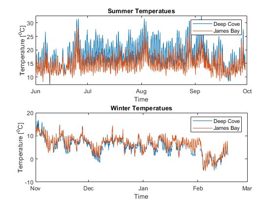

close all;
clear
deepcove = "../project/data/DeepCove_temperature_2019.dat";
jamesbay = "../project/data/JamesBay_temperature_2019.dat";
t_start_1 = datenum(2017,6,1,0,0,0);
t_end_1 = datenum(2017,9,30,0,0,0);
t_start_2 = datenum(2018,11,1,0,0,0);
t_end_2 = datenum(2019,2,18,0,0,0);
[deep_summer_times, deep_summer_temps] = getminute(deepcove, t_start_1, t_end_1);
[james_summer_times, james_summer_temps] = getminute(jamesbay, t_start_1, t_end_1);
[deep_winter_times, deep_winter_temps] = getminute(deepcove, t_start_2, t_end_2);
[james_winter_times, james_winter_temps] = getminute(jamesbay, t_start_2, t_end_2);
figure()
subplot(2,1,1);
plot(deep_summer_times, deep_summer_temps); hold on
plot(james_summer_times, james_summer_temps)
xlabel('Time')
ylabel('Temperature [^oC]')
title('Summer Temperatues');
legend({'Deep Cove', 'James Bay'})
datetick('x')
subplot(2,1,2);
plot(deep_winter_times, deep_winter_temps); hold on
plot(james_winter_times, james_winter_temps);
xlabel('Time')
ylabel('Temperature [^oC]')
title('Winter Temperatues');
legend({'Deep Cove', 'James Bay'})
datetick('x')
deep_summer_temps_nanfree = deep_summer_temps(~isnan(deep_summer_temps));
deep_summer_times_nanfree = deep_summer_times(~isnan(deep_summer_temps));
james_summer_temps_nanfree = james_summer_temps(~isnan(james_summer_temps));
james_summer_times_nanfree = james_summer_times(~isnan(james_summer_temps));
deep_winter_temps_nanfree = deep_winter_temps(~isnan(deep_winter_temps));
deep_winter_times_nanfree = deep_winter_times(~isnan(deep_winter_temps));
james_winter_temps_nanfree = james_winter_temps(~isnan(james_winter_temps));
james_winter_times_nanfree = james_winter_times(~isnan(james_winter_temps));
s_to_day = 60*60*24;
fs = 1/60;
n = 3;
Rp = .01;
Rs = 100;
Wp_high = 1.05 / 86400;
Wp_low = 0.95 / 86400;
[b_low, a_low] = ellip(n, Rp, Rs, Wp_low/(fs/2));
[H_low, w_low] = freqz(b_low, a_low);
[b_high, a_high] = ellip(n, Rp, Rs, Wp_high/(fs/2), 'high');
[H_high, w_high] = freqz(b_high, a_high);
figure()
hold on
plot(w_low, abs(H_low))
plot(w_high, abs(H_high))
xlabel("Frequency (Hz)")
ylabel("Response")
title("Filter frequency response")
legend(["Lowpass ellicptical", "Highpass elliptical"])
xlim([-0.01 0.2])
ylim([0 1.01])
figure()
subplot(4,1,1)
hold on;
james_summer_filtered = filtfilt(b_low, a_low, james_summer_temps_nanfree);
james_summer_filtered = filtfilt(b_high, a_high, james_summer_filtered);
plot(james_summer_times_nanfree, james_summer_temps_nanfree)
plot(james_summer_times_nanfree, james_summer_filtered)
title("James Bay Summer")
xlabel('Time')
ylabel('Temperature [^oC]')
legend({'Time data', 'Filtered Response'})
datetick('x')
subplot(4,1,2)
deep_summer_filtered = filtfilt(b_low, a_low, deep_summer_temps_nanfree);
deep_summer_filtered = filtfilt(b_high, a_high, deep_summer_filtered);
hold on
plot(deep_summer_times_nanfree, deep_summer_temps_nanfree)
plot(deep_summer_times_nanfree, deep_summer_filtered)
title("Deep Cove Summer")
xlabel('Time')
ylabel('Temperature [^oC]')
legend({'Time data', 'Filtered Response'})
datetick('x')
subplot(4,1,3)
hold on;
james_winter_filtered = filtfilt(b_low, a_low, james_winter_temps_nanfree);
james_winter_filtered = filtfilt(b_high, a_high, james_winter_filtered);
plot(james_winter_times_nanfree, james_winter_temps_nanfree)
plot(james_winter_times_nanfree, james_winter_filtered)
title("James Bay Winter")
xlabel('Time')
ylabel('Temperature [^oC]')
legend({'Time data', 'Filtered Response'})
datetick('x')
subplot(4,1,4)
hold on;
deep_winter_filtered = filtfilt(b_low, a_low, deep_winter_temps_nanfree);
deep_winter_filtered = filtfilt(b_high, a_high, deep_winter_filtered);
plot(deep_winter_times_nanfree, deep_winter_temps_nanfree)
plot(deep_winter_times_nanfree, deep_winter_filtered)
title("Deep Cove Winter")
xlabel('Time')
ylabel('Temperature [^oC]')
legend({'Time data', 'Filtered Response'})
datetick('x')
var_deep_summer = nanvar(deep_summer_temps);
var_james_summer = nanvar(james_summer_temps);
var_deep_winter = nanvar(deep_winter_temps);
var_james_winter = nanvar(james_winter_temps);
disp("Varaince for unfiltered data:")
disp("Deep Cove summer = " + var_deep_summer + "C");
disp("James Bay summer = " + var_james_summer + "C");
disp("Deep Cove winter = " + var_deep_winter + "C");
disp("James Bay winter = " + var_james_winter + "C");
var_deep_summer_filtered = nanvar(deep_summer_filtered);
var_james_summer_filtered = nanvar(james_summer_filtered);
var_deep_winter_filtered = nanvar(deep_winter_filtered);
var_james_winter_filtered = nanvar(james_winter_filtered);
disp("Variance for filtered data:")
disp("Deep Cove summer filtered = " + var_deep_summer_filtered + "C");
disp("James Bay summer filtered = " + var_james_summer_filtered + "C");
disp("Deep Cove winter filtered = " + var_deep_winter_filtered + "C");
disp("James Bay winter filtered = " + var_james_winter_filtered + "C");
NFFT = 2^14;
[pxx_deep_summer, f_deep_summer] = ...
pwelch(deep_summer_temps_nanfree, NFFT, NFFT/2, NFFT, 1/60);
[pxx_james_summer, f_james_summer] = ...
pwelch(james_summer_temps_nanfree, NFFT, NFFT/2, NFFT, 1/60);
[pxx_deep_winter, f_deep_winter] = ...
pwelch(deep_winter_temps_nanfree, NFFT, NFFT/2, NFFT, 1/60);
[pxx_james_winter, f_james_winter] = ...
pwelch(james_winter_temps_nanfree, NFFT, NFFT/2, NFFT, 1/60);
[pxx_deep_summer_filt, f_deep_summer_filt] = ...
pwelch(deep_summer_filtered, NFFT, NFFT/2, NFFT, 1/60);
[pxx_james_summer_filt, f_james_summer_filt] = ...
pwelch(james_summer_filtered, NFFT, NFFT/2, NFFT, 1/60);
[pxx_deep_winter_filt, f_deep_winter_filt] = ...
pwelch(deep_winter_filtered, NFFT, NFFT/2, NFFT, 1/60);
[pxx_james_winter_filt, f_james_winter_filt] = ...
pwelch(james_winter_filtered, NFFT, NFFT/2, NFFT, 1/60);
fSyy_deep_summer = f_deep_summer .* pxx_deep_summer;
fSyy_james_summer = f_james_summer .* pxx_james_summer;
fSyy_deep_winter = f_deep_winter .* pxx_deep_winter;
fSyy_james_winter = f_james_winter .* pxx_james_winter;
fSyy_deep_summer_filt = f_deep_summer_filt .* pxx_deep_summer_filt;
fSyy_james_summer_filt = f_james_summer_filt .* pxx_james_summer_filt;
fSyy_deep_winter_filt = f_deep_winter_filt .* pxx_deep_winter_filt;
fSyy_james_winter_filt = f_james_winter_filt .* pxx_james_winter_filt;
figure()
subplot(4,1,1)
semilogx(f_deep_summer * s_to_day, fSyy_deep_summer)
hold on
semilogx(f_deep_summer_filt * s_to_day, fSyy_deep_summer_filt)
title("Deep Cove Summer PSD")
xlabel('Cycles per day (cpd)')
ylabel('H(\omega)')
legend(["Original", "Filtered"])
subplot(4,1,2)
semilogx(f_james_summer * s_to_day, fSyy_james_summer)
hold on
semilogx(f_james_summer_filt * s_to_day, fSyy_james_summer_filt)
title("James Bay Summer PSD")
xlabel('Cycles per day (cpd)')
ylabel('H(\omega)')
legend(["Original", "Filtered"])
subplot(4,1,3)
semilogx(f_deep_winter * s_to_day, fSyy_deep_winter)
hold on
semilogx(f_deep_winter_filt * s_to_day, fSyy_deep_winter_filt)
title("Deep Cove Winter PSD")
xlabel('Cycles per day (cpd)')
ylabel('H(\omega)')
legend(["Original", "Filtered"])
subplot(4,1,4)
semilogx(f_james_winter * s_to_day, fSyy_james_winter)
hold on
semilogx(f_james_winter_filt * s_to_day, fSyy_james_winter_filt)
title("James Bay Winter PSD")
xlabel('Cycles per day (cpd)')
ylabel('H(\omega)')
legend(["Original", "Filtered"])
var_deep_winter_filt = trapz(f_deep_winter_filt, pxx_deep_winter_filt);
var_james_winter_filt = trapz(f_james_winter_filt, pxx_james_winter_filt);
var_deep_summer_filt = trapz(f_deep_summer_filt, pxx_deep_summer_filt);
var_james_summer_filt = trapz(f_james_summer_filt, pxx_james_summer_filt);
disp("The variance of the diurnal cycle:")
disp("Deep cove summer = " + var_deep_summer_filt)
disp("James Bay summer = " + var_james_summer_filt)
disp("Deep cove winter = " + var_deep_winter_filt)
disp("James Bay winter = " + var_james_winter_filt)
disp("Percentage of diurnal cycles:")
disp("Deep cove summer = " + (var_deep_summer_filtered/var_deep_summer)*100)
disp("James bay summer = " + (var_james_summer_filtered/var_james_summer)*100)
disp("Deep cove winter = " + (var_deep_winter_filtered/var_deep_winter)*100)
disp("James Bay winter = " + (var_james_winter_filtered/var_james_winter)*100)
function [times, temps] = getminute(fname, time_start, time_end)
minute_data = load(fname);
minute_time_start = minute_data(1);
minute_time_end = minute_data(2);
minute_data_points = minute_data(3);
all_minute_times = linspace(minute_time_start, minute_time_end, minute_data_points) - 7/24;
all_minute_temperatures = minute_data(4:minute_data_points+3);
minute_index = find(all_minute_times >= time_start & all_minute_times <= time_end);
times = all_minute_times(minute_index);
temps = all_minute_temperatures(minute_index);
end
Varaince for unfiltered data:
Deep Cove summer = 19.7493C
James Bay summer = 7.7365C
Deep Cove winter = 13.7886C
James Bay winter = 11.6205C
Variance for filtered data:
Deep Cove summer filtered = 9.5951C
James Bay summer filtered = 3.3427C
Deep Cove winter filtered = 1.1718C
James Bay winter filtered = 1.1518C
The variance of the diurnal cycle:
Deep cove summer = 9.6592
James Bay summer = 3.3134
Deep cove winter = 1.2503
James Bay winter = 1.1958
Percentage of diurnal cycles:
Deep cove summer = 48.5846
James bay summer = 43.207
Deep cove winter = 8.4986
James Bay winter = 9.9114
